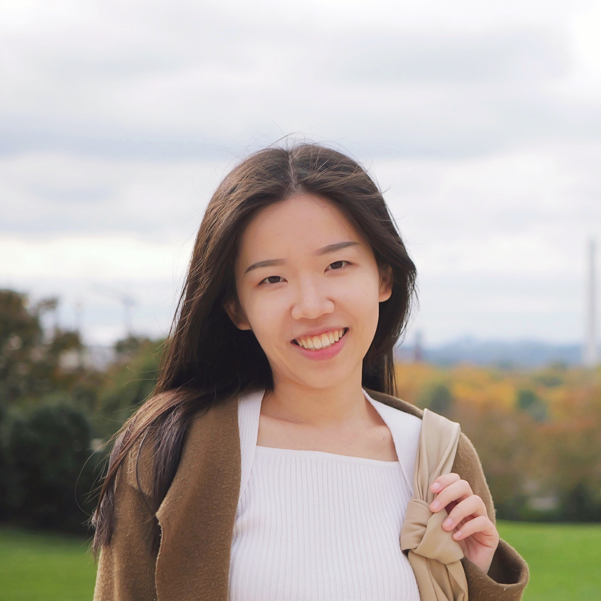

|
Tianwei Yue I am the CEO & Chief Scientist at Mathos AI, a Y Combinator (W24) backed startup building LLM agents for math education. I was named to Forbes 30 Under 30 (2025). Previously, I was a researcher at AI Racing Tech (UC Berkeley), where our team won 3rd place at the Indy Autonomous Challenge 2023. My work on applying the Segment Anything Model to road perception received the Best Paper Award at CVPR 2024 Workshop. I hold an M.S. in Computational Data Science from Carnegie Mellon University and a B.A. in Mathematics from Xi'an Jiaotong University, where I was admitted at age 14 through the Special Class for Gifted Young. |
 |
{kind=link}
News
|
ResearchI'm interested in LLM agents, autonomous systems, and machine learning. My work spans from building LLM systems that solve math problems to developing ML models for autonomous racing. Representative papers are highlighted. |
|
|
StateFlow: Enhancing LLM Task-Solving through State-Driven Workflows
Yiran Wu, Tianwei Yue, Shaokun Zhang, Chi Wang, Qingyun Wu First Conference on Language Modeling (CoLM), 2024 & NeurIPS Workshop arXiv A state-driven workflow framework for LLM agents that achieves 15% higher accuracy than ChatGPT on math problem solving. |

|
Segment Anything Model for Road Network Graph Extraction
Congrui Hetang, Haoru Xue, Cindy Le, Tianwei Yue, Wenping Wang, Yihui He CVPR 2024 Workshop on Scene Graphs and Graph Representation Learning Best Paper Award arXiv / code Applying the Segment Anything Model (SAM) to road perception for autonomous vehicles. |

|
Deep Learning for Genomics: From Early Neural Nets to Modern Large Language Models
Tianwei Yue, Yuanxin Wang, Longxiang Zhang, Chunming Gu, Haoru Xue, Wenping Wang, ..., Yihui Dun International Journal of Molecular Sciences, 2023 paper A comprehensive overview of deep learning applications for genomics, from early neural networks to modern LLMs. |

|
Spline-Based Minimum-Curvature Trajectory Optimization for Autonomous Racing
Haoru Xue, Tianwei Yue, John M. Dolan arXiv preprint, 2023 arXiv A spline-based trajectory optimization method for autonomous racing vehicles. |

|
Deep mixed model for marginal epistasis detection and population stratification correction in genome-wide association studies
Haohan Wang, Tianwei Yue, Jingkang Yang, Wei Wu, Eric P. Xing BMC Bioinformatics, 2019 paper A deep mixed model approach for detecting genetic interactions while correcting for population stratification. |
Experience |
|
CEO & Chief Scientist @ Mathos AI
Y Combinator W24 | June 2023 - Present Building LLM agent systems for math education. Reached 1M+ monthly active users and $1M ARR. Selected as Forbes 30 Under 30 (2025) and Finalist at SXSW EDU Competitions (2025). |
|
|
Researcher @ AI Racing Tech (UC Berkeley)
Oct 2022 - May 2023 Developed ML models for autonomous race car dynamics prediction at speeds above 180 MPH. Led the Telemetry sub-team for real-time visualization. Won 3rd place at Indy Autonomous Challenge 2023. |
|
|
Applied Machine Learning Engineer @ ByteDance
Aug 2020 - Aug 2021 Designed and improved recommendation algorithms for TikTok, Toutiao, and Douyin. Launched list-wise ranking algorithms and feature expiration systems. |
Education |
|
M.S. Computational Data Science
Carnegie Mellon University, School of Computer Science Aug 2018 - May 2020 TA: Deep Reinforcement Learning & Control |
|

|
B.A. Mathematics and Applied Mathematics
Xi'an Jiaotong University, Special Class for Gifted Young Sep 2014 - Jun 2018 Admitted at age 14 through nationwide competitions |
Selected Awards
|
|
Template adapted from Jon Barron's website. |